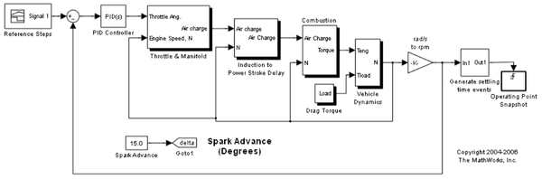
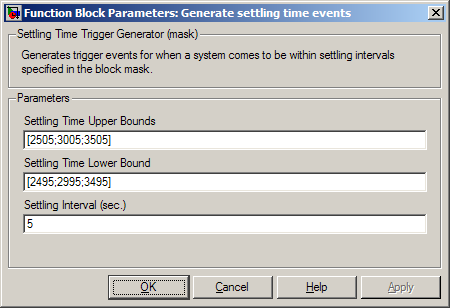
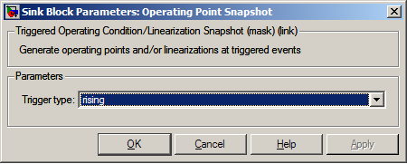
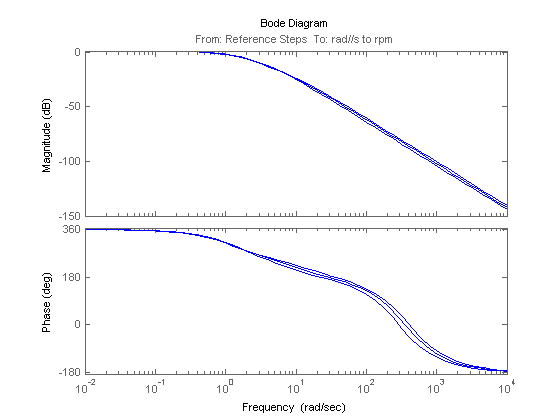
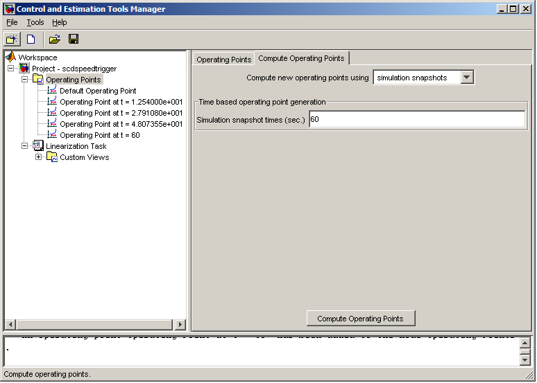

トリガー イベントで操作点のスナップショットを計算
目次
このデモでは、トリガー スナップショットを使用した操作点の生成を紹介します。モデルを開くには、次のコマンドを使用します。
scdspeedtrigger
トリガー スナップショットを使用した操作点の生成
この例では、2500 rpm、3000 rpm、および 3500 rpm の定常状態の操作点でモデルを線形化します。これらの操作点を取得するには、シミュレーションを使用して定常状態条件の操作点スナップショットを生成します。システムが定常状態の値に到達する正確な時間が常にわかっているわけではないため、サブシステムなどのブロックは、整定イベントを生成するために組み込むことができる整定時間イベントを生成します。この例のブロックは、モデルが整定条件に近づくと立ち上がりエッジ トリガーを送信します。以下に示されているマスクでは、複数の整定条件を入力できます。この例では、ブロックは、エンジン スピードが最小値の 5 秒間で 2500 rpm、3000 rpm、および 3500 rpm 近くで安定すると、立ち上がりエッジ トリガーを送信するよう設定されます。

次に、出力の整定時間イベントが Operating Point Snapshot ブロックに供給されます。この例では、ブロックは、立ち上がりエッジ トリガーのイベントで操作点スナップショットを作成します。

FINDOP コマンドを使用すると、シミュレーションが 60 秒間実行され、エンジン スピードが定常状態に近くなると操作点が返されます。
op = findop('scdspeedtrigger',60);
最初の操作点は、2500 rpm (261.8 rad/s) の整定条件に近くなります。
op(1)
Operating Point for the Model scdspeedtrigger.
(Time-Varying Components Evaluated at time t=10.63)
States:
----------
(1.) scdspeedtrigger/PID Controller/Filter
x: 0
(2.) scdspeedtrigger/PID Controller/Integrator
x: 10.5
(3.) scdspeedtrigger/Throttle & Manifold/Intake Manifold/p0 = 0.543 bar
x: 0.511
(4.) scdspeedtrigger/Vehicle Dynamics/w = T//J w0 = 209 rad//s
x: 262
Inputs: None
----------
2 つ目の操作点は、3000 rpm (314.16 rad/s) の整定条件に近くなります。
op(2)
Operating Point for the Model scdspeedtrigger.
(Time-Varying Components Evaluated at time t=28.3703)
States:
----------
(1.) scdspeedtrigger/PID Controller/Filter
x: 0
(2.) scdspeedtrigger/PID Controller/Integrator
x: 11.9
(3.) scdspeedtrigger/Throttle & Manifold/Intake Manifold/p0 = 0.543 bar
x: 0.49
(4.) scdspeedtrigger/Vehicle Dynamics/w = T//J w0 = 209 rad//s
x: 314
Inputs: None
----------
3 つ目の操作点は、3500 rpm (366.52 rad/s) の整定条件に近くなります。
op(3)
Operating Point for the Model scdspeedtrigger.
(Time-Varying Components Evaluated at time t=48.2688)
States:
----------
(1.) scdspeedtrigger/PID Controller/Filter
x: 0
(2.) scdspeedtrigger/PID Controller/Integrator
x: 13.3
(3.) scdspeedtrigger/Throttle & Manifold/Intake Manifold/p0 = 0.543 bar
x: 0.478
(4.) scdspeedtrigger/Vehicle Dynamics/w = T//J w0 = 209 rad//s
x: 367
Inputs: None
----------
モデルの線形化
操作点は、線形化に使用されます。最初に、次のコマンドを使用して、入力点と出力点を指定します。
io(1) = linio('scdspeedtrigger/Reference Steps',1,'in'); io(2) = linio('scdspeedtrigger/rad//s to rpm',1,'out');
閉ループ伝達関数ごとにモデルを線形化してボード線図をプロットします。
sys = linearize('scdspeedtrigger',op(1:3),io);
bode(sys)
 Control and Estimation Tools Manager におけるスナップショットの生成
上記の例の操作点は、Control and Estimation Tools Manager GUI で再計算できます。操作点スナップショットは、次の図のように、ノード Operating Points で生成されます。

bdclose('scdspeedtrigger')